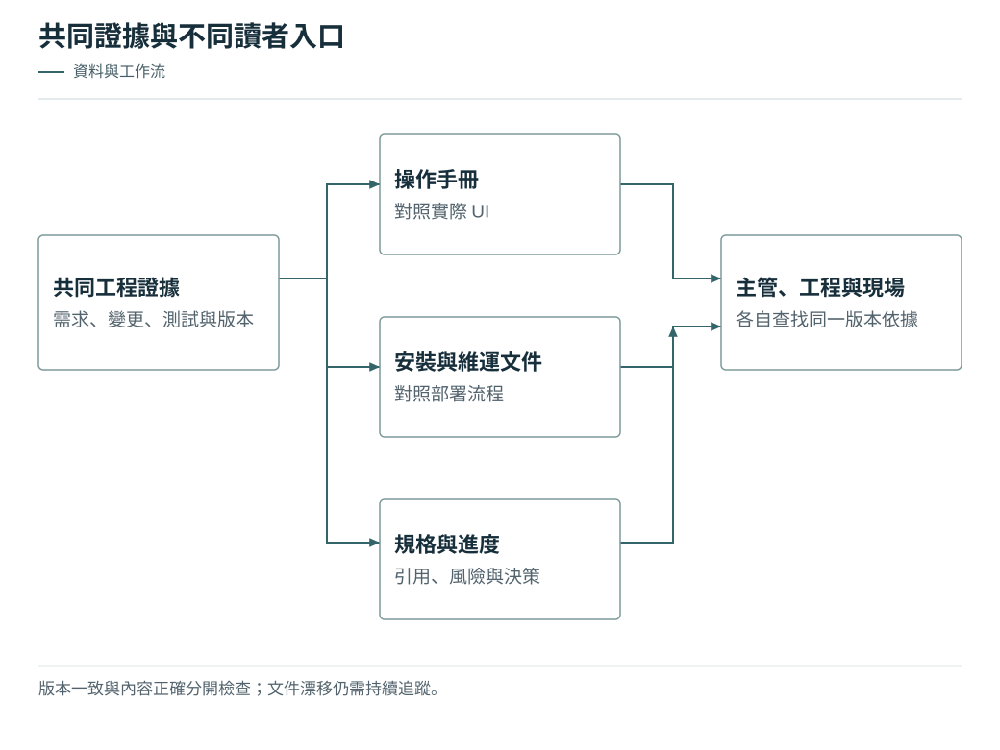

工程實務
工程文件與知識系統
整理需求、設計、測試和版本文件的追溯關係，建立持續維護的內部文件入口。
- 我的工作
- 參與文件資訊架構與維護流程，將設計、程式變更、測試及版本紀錄整理為依讀者分層的文件入口。
- 成果與狀態
- 建立可搜尋的文件入口，連結設計、issue、測試、release、手冊與管理摘要。
- 紀錄時間
- 2026 年文件系統紀錄
情境與目標
需求、測試與版本散落，各角色難從共同依據理解現況。
系統架構與流程
架構說明
- 輸入
- 需求、設計、程式變更、測試與版本紀錄。
- 處理方式
- 依讀者建立文件入口，手冊對UI、安裝文件對部署、規格與引用各自核對。
- 產出
- 讓主管、開發與現場協作角色回查同一套進度及決策依據。
流程圖

版本一致與內容正確分開檢查；文件漂移仍需持續追蹤。（點圖放大）關鍵設計取捨
讓不同角色從同一套證據讀到進度
挑戰老闆、主管、開發同事與FAE需要不同入口，單純保存文件仍難以理解目前風險和狀態。
方法與取捨以共同的工程證據支援不同讀者入口。我參與文件資訊架構與維護流程，將程式變更、測試和風險整理成系統、操作、手冊及紀錄導航。
結果讓各角色可從同一證據基礎回查進度、風險與決策，支援非同步協作及接手。
交付文件共用版本，內容仍各自對準真實來源
挑戰手冊、安裝文件、規格及簡報用途不同，若複製成同一份摘要，容易與真實UI或部署程序脫節。
方法與取捨保留共同版本依據，同時讓各類文件各自核對真實來源。我參與建立手冊對 UI、安裝文件對部署流程、規格保留引用及簡報對受眾問題的核對方式。
結果建立各類交付文件的核對原則，將版本一致與內容正確分開檢查；仍保留人工檢查及漂移追蹤。
成果與驗證範圍
已完成的工作
建立可搜尋的文件入口，連結設計、issue、測試、release、手冊與管理摘要。
驗證與限制
文件入口及維護流程已建立，內容正確性與版本一致性透過持續檢查追蹤。